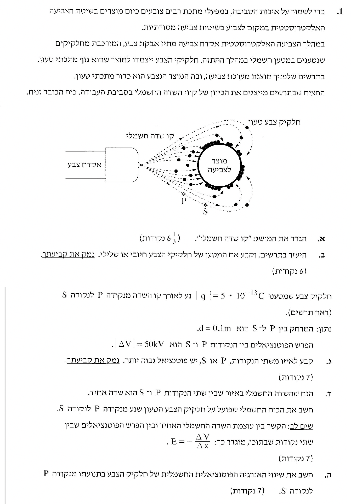

שאלה זו עוסקת ביישום טכנולוגי יומיומי של עקרונות האלקטרוסטטיקה: צביעת מוצרים מתכתיים באמצעות תהליך שבו חלקיקי צבע נטענים חשמלית ונמשכים אל המוצר שאותו רוצים לצבוע.
ננתח את הבעיה תוך התבססות על מושגי היסוד של שדה חשמלי, קווי שדה, אנרגיה פוטנציאלית ועבודה של כוח חשמלי, ונראה כיצד הכיווניות של קווי השדה מאפשרת לנו להסיק מידע רב על המערכת.

[תמונת השאלה המקורית]לא נמצאה תמונה בשם question-image.png באותה תיקייה.
סעיף א'
מה נתון: מושג בסיסי באלקטרוסטטיקה (אין נתונים מספריים בשלב זה).
מה מחפשים: הגדרה פיזיקלית מדויקת למושג "קו שדה חשמלי".
הסבר המושג:
קו שדה חשמלי הוא קו דמיוני במרחב, המוגדר כך שהמשיק לו בכל נקודה ונקודה עליו מצביע על כיוונו של וקטור השדה החשמלי \(\vec{E}\) באותה נקודה. צפיפות קווי השדה באזור מסוים (מספר הקווים ליחידת שטח חתך הניצב להם) מייצגת את עוצמתו (גודלו) של השדה החשמלי באותו אזור.
הגדרה: קו שדה חשמלי הוא קו שהמשיק אליו בכל נקודה מראה את כיוון השדה החשמלי, וכיוונו הוא הכיוון של הכוח שהיה פועל על מטען בוחן חיובי בנקודה זו.
טיפ מורה:
זכרו שקווי שדה הם כלי מתמטי ויזואלי שנועד לעזור לנו לדמיין תופעה בלתי נראית. מכיוון שבכל נקודה במרחב יכול להיות רק כיוון אחד לשדה השקול, קווי שדה לעולם אינם נחתכים או חוצים זה את זה!
סעיף ב'
מה נתון: תרשים המציג את קווי השדה החשמלי. על פי החצים בתרשים, קווי השדה מכוונים מאקדח הצבע ימינה, לעבר המוצר. חלקיקי הצבע נעים עם קווי השדה אל עבר המוצר.
מה מחפשים: קביעת סימן המטען של חלקיקי הצבע (חיובי או שלילי) בצירוף נימוק.
על פי התרשים הנתון, אנו רואים שחצי קווי השדה מצביעים בכיוון מאקדח הצבע לעבר המוצר לצביעה (שדה \(\vec{E}\) ימינה). במקביל, חלקיקי הצבע נזרקים מאקדח הצבע ונעים אל עבר המוצר, כלומר הכוח החשמלי \(\vec{F}_e\) המושך אותם אל המוצר פועל באותו הכיוון של השדה החשמלי הנתון.
על פי הנוסחה המקשרת בין כוח חשמלי לשדה חשמלי, כאשר הכוח הפועל על חלקיק פועל באותו הכיוון שאליו מצביע השדה החשמלי (ולא נגדו), המטען \(q\) של החלקיק חייב להיות מטען חיובי.
מסקנה: מטען חלקיקי הצבע הוא מטען חיובי.
טיפ מורה:
דרך פשוטה לזכור: מטען חיובי הוא "צייתן" ונע יחד עם כיוון החצים של קווי השדה (עם הזרם). מטען שלילי הוא "מרדן" ומרגיש כוח שדוחף אותו נגד כיוון חצי השדה (נגד הזרם). כאן החלקיקים נעים יחד עם החצים, ולכן הם חיוביים!
סעיף ג'
מה נתון: חלקיק צבע נע לאורך קו שדה מנקודה P לנקודה S. נתון גודל מטענו \(|q| = 5 \cdot 10^{-13}\text{ C}\) (כבר במערכת MKS), והמרחק ביניהן הוא \(d = 0.1\text{ m}\). גודלו של הפרש הפוטנציאלים ביניהן הוא \(|\Delta V| = 50\text{ kV}\). המרת יחידות MKS: נמיר קילו-וולט לוולטים: \(|\Delta V| = 50 \cdot 10^3\text{ V} = 50,000\text{ V}\).
מה מחפשים: לאיזו משתי הנקודות, P או S, יש פוטנציאל חשמלי גבוה יותר, בצירוף נימוק.
נוסחאות ועקרונות בשימוש:
הקשר האיכותי בין כיוון קווי השדה החשמלי לבין מפל הפוטנציאל (השדה מצביע מכיוון הפוטנציאל הגבוה לנמוך).
ניתוח המצב:
כלל יסוד באלקטרוסטטיקה קובע כי קווי שדה חשמלי מצביעים תמיד מאזור במרחב בעל פוטנציאל חשמלי גבוה יותר לאזור במרחב בעל פוטנציאל חשמלי נמוך יותר (בדומה למים הזורמים ממקום גבוה למקום נמוך).
על פי התרשים המצורף לשאלה, קו השדה עובר מהנקודה P לכיוון הנקודה S, והחץ שעליו מצביע בכיוון זה (מ-P אל S). מכך ניתן להסיק שהפוטנציאל הולך ויורד ככל שמתקדמים עם החץ מ-P ל-S.
מסקנה: הפוטנציאל החשמלי בנקודה P גבוה יותר מהפוטנציאל בנקודה S.
סעיף ד'
מה נתון: השדה החשמלי בין הנקודות P ו-S הוא שדה אחיד. מהסעיפים הקודמים אנו יודעים: המטען חיובי ולכן \(q = +5 \cdot 10^{-13}\text{ C}\), המרחק הוא \(d = \Delta x = 0.1\text{ m}\), והפרש הפוטנציאלים המוחלט הוא \(|\Delta V| = 50,000\text{ V}\).
מה מחפשים: לחשב את הכוח החשמלי (גודל וכיוון) שפועל על חלקיק הצבע כשהוא נע מנקודה P לנקודה S.
נוסחאות ועקרונות בשימוש: \( E = \frac{|\Delta V|}{\Delta x} \) (חישוב גודל השדה מתוך הנוסחה שניתנה בשאלה) \( \vec{F}_e = q\vec{E} \) (חישוב הכוח על סמך השדה)
תרשים כוחות (FBD) וחישוב:
תרשים כוחות לחלקיק הצבע
שלב 1: מציאת גודל השדה החשמלי האחיד
נציב את הערכים המוחלטים בנוסחה הנתונה בשאלה למציאת עוצמת השדה בין P ל-S:
מסקנה: גודל הכוח החשמלי הפועל על החלקיק הוא \( 2.5 \cdot 10^{-7} \text{ N} \), וכיוונו מנקודה P לנקודה S.
סעיף ה'
מה נתון: החלקיק שגודל מטענו \(q = +5 \cdot 10^{-13}\text{ C}\) מסיים את תנועתו מנקודה P לנקודה S. אנו יודעים שהפוטנציאל יורד ולכן השינוי בפוטנציאל בין מצב הסיום למצב ההתחלה הוא שלילי: \(\Delta V = V_S - V_P = -50,000\text{ V}\).
מה מחפשים: חשב את שינוי האנרגיה הפוטנציאלית החשמלית \(\Delta U_E\) של החלקיק בתנועה זו.
נוסחאות ועקרונות בשימוש:
מתוך ההגדרה לפוטנציאל \(V = \frac{U_E}{q}\) מקבלים את הנוסחה לשינוי אנרגיה פוטנציאלית:
\( \Delta U_E = q \cdot \Delta V \)
חישוב:
נציב את ערך המטען עם הסימן שלו (חיובי) ואת הפרש הפוטנציאלים עם הסימן שלו (שלילי, כי הנקודה S נמצאת בפוטנציאל נמוך מ-P) אל תוך הנוסחה:
(הערה: ניתן היה להגיע לאותה תוצאה על ידי חישוב עבודת הכוח החשמלי שמצאנו בסעיף הקודם: \(W = F \cdot d = 2.5 \cdot 10^{-7} \cdot 0.1 = 2.5 \cdot 10^{-8}\text{ J}\). ומכיוון ש-\(W = -\Delta U_E\), מקבלים את אותה התוצאה בדיוק).
מסקנה: שינוי האנרגיה הפוטנציאלית החשמלית של החלקיק הוא \( -2.5 \cdot 10^{-8} \text{ J} \).
טיפ מורה:
הסימן השלילי הוא קריטי כאן! משמעותו היא שלמערכת יש פחות אנרגיה פוטנציאלית בסוף התהליך מאשר בתחילתו. בדומה לכדור שנופל במורד הר ומאבד מגובהו (כלומר מאבד אנרגיה פוטנציאלית כובדית לטובת אנרגיה קינטית), גם חלקיק חיובי "נופל" אל עבר פוטנציאל נמוך יותר, ומאבד אנרגיה פוטנציאלית חשמלית לטובת מהירותו.
נוסח השאלה המקורית
[תמונת השאלה המקורית]לא נמצאה תמונה בשם question-image.png.